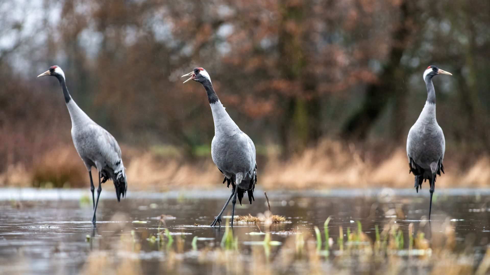
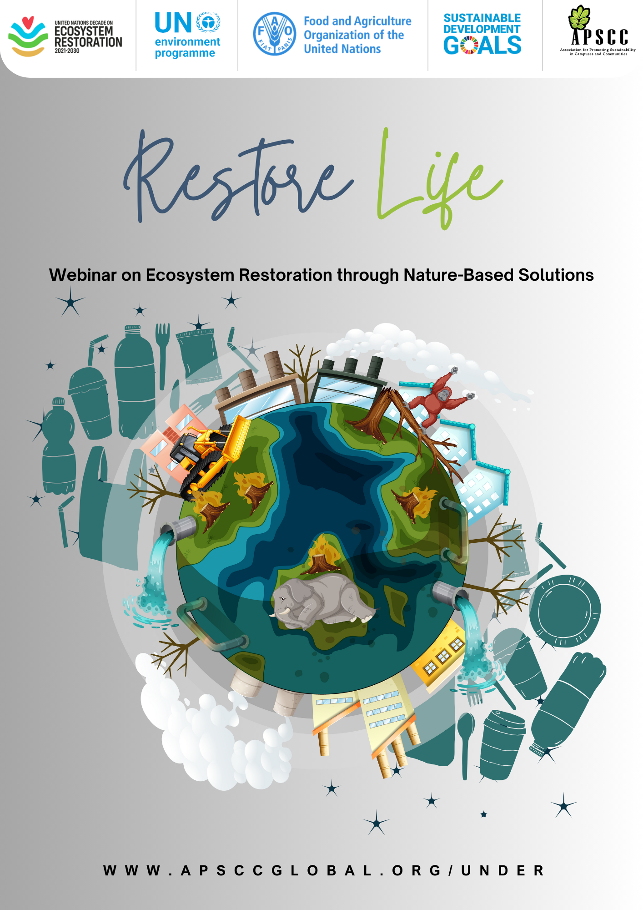

UN Decade Challenge · Restore Life
A webinar on Ecosystem Restoration using Nature-Based Solutions — connecting global restoration science with practical, community-led action.

About the webinar
Restore Life explores how nature-based approaches can heal degraded ecosystems — from restoring biodiversity and ecosystem services to climate change mitigation, community participation and the policy and funding support that makes restoration durable.
Part of APSCC's contribution to the UN Decade on Ecosystem Restoration Cities & Youth Challenge.
Agenda
Host a session